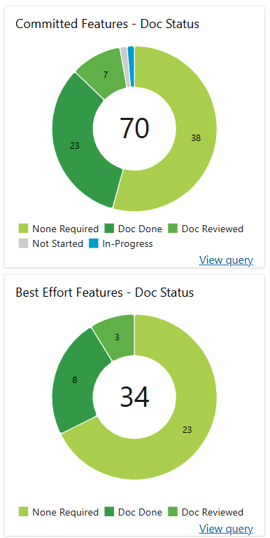
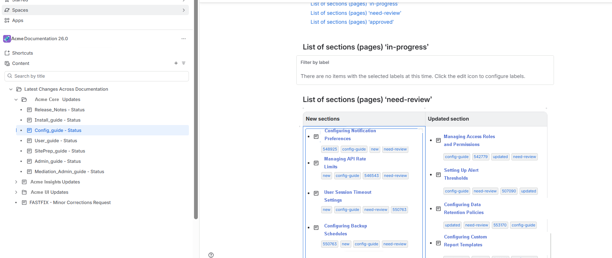

Product documentation was maintained in release-specific Confluence spaces, while engineering and product work was managed in Azure DevOps.
As each release progressed, documentation work needed to be managed alongside the related product work: handling requests, tracking updates, monitoring progress, and reporting customer-facing issues.
I managed the documentation workflow throughout each release — handling requests, tracking changes, monitoring documentation status, publishing across multiple channels, and maintaining customer-facing release information.
Some of these processes and systems I designed myself; others I inherited and took ownership of.
Each release had its own Confluence space containing 30+ product guides. The guides were published as PDFs through SharePoint and maintained in a customer-facing portal.
I managed the publishing workflow end to end: maintaining the source documentation in Confluence, exporting the guides to PDF, applying and maintaining the custom CSS, publishing the PDFs to SharePoint, and uploading approved content to the customer portal.
Documentation requests came from several sources — content corrections, product changes, customer issues — with no consistent way to route or scope them. I formalized a request model that defined the appropriate path for each type of change and connected documentation work to the relevant engineering or product work item.
I also defined release-specific rules for determining which documentation versions needed to be updated and republished. Changes could apply to the current release, the previous release, or both, depending on their scope and significance.
Release planning required a clear view of documentation status across the features being shipped.
I learned to build this dashboard from a colleague and, after they left the team, became solely responsible for creating it for each new release, separating committed features from best-effort ones.

The dashboard provided a single view of documentation status across the release, from Not Started and In Progress to Doc Reviewed and Doc Done.
I designed a label-based tracking system in Confluence to identify documentation changes across releases and 30+ product guides. The system made it easy to see at a glance what was new or updated.

Each release included a summary of known and resolved customer issues, generated from Azure DevOps queries that I built and maintain.
The workflow provided a consistent way to manage documentation throughout a release — from routing requests and tracking changes to publishing content and reporting customer issues.